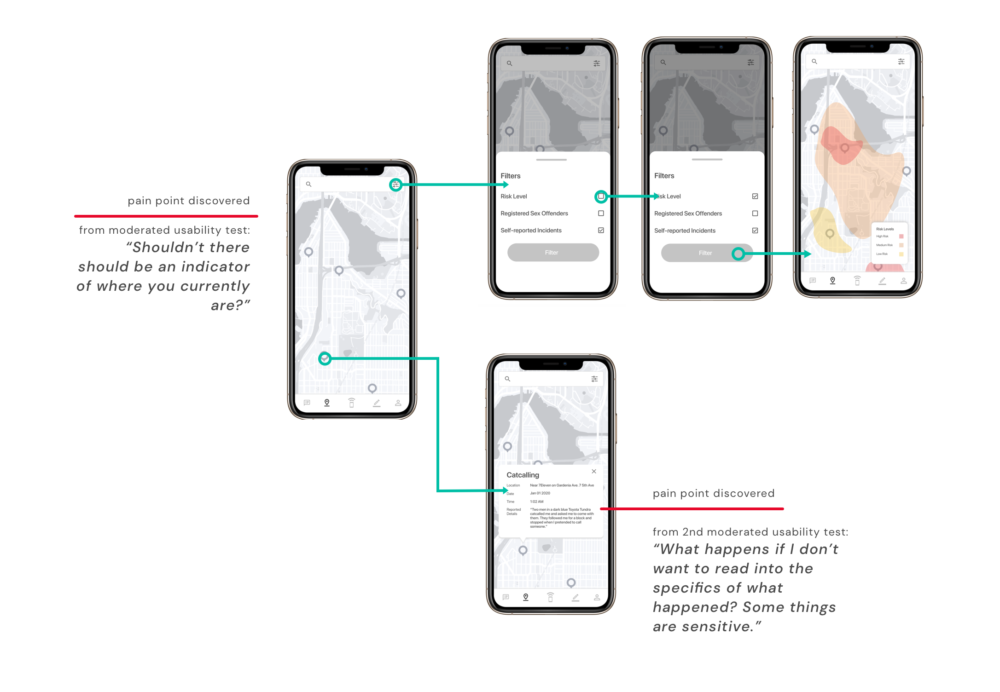
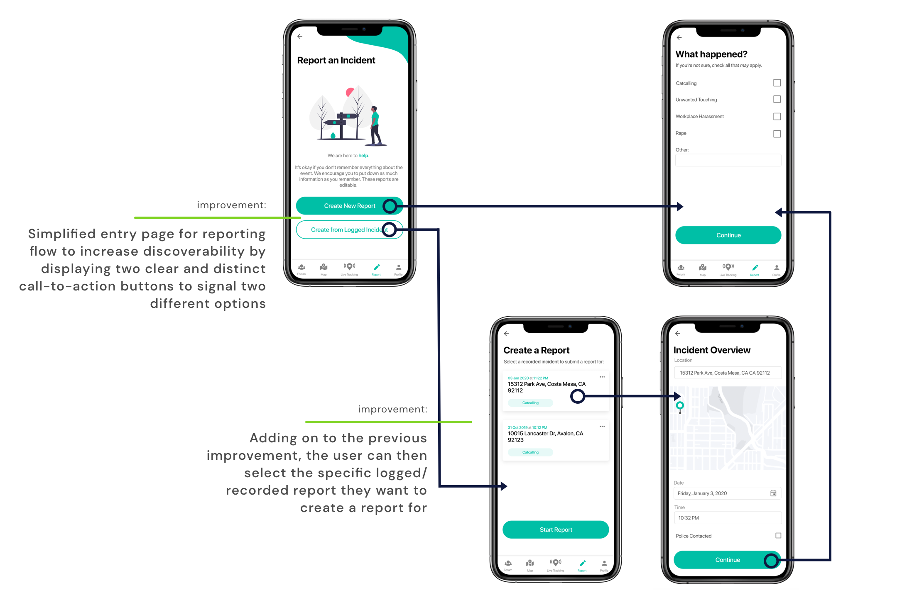
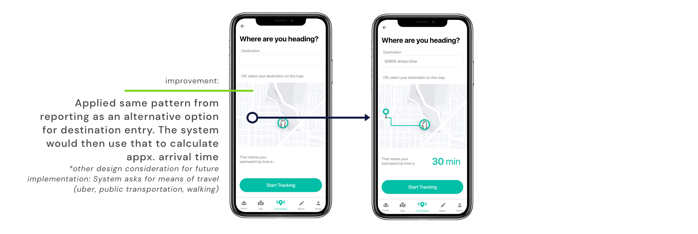

OVERVIEW
If you’ve ever felt wary walking out at night by yourself, unsure of how to protect yourself from a harasser, or want a space to communicate with others who’ve gone through similar situations, Assure aims to provide solutions to address these very problems. Currently, there is a lack of resources as well as support available for individuals who may be at risk or who have experienced some form of sexual harassment.
MY ROLE
- Product Design
- UI/UX Design
- UX Research
DURATION
- 8 weeks
TOOLS
- Figma
- Miro
- usabilityHub
TEAM
- Akshita (UX Researcher)
- Cheyenne (Product Designer)
- Joshua (Developer)
- Kelly (Developer)
DESIGN OUTCOME
After extensive user research, ideation, usability testing, and iterations, we refined our solution in the form of 4 features (interactive map, live tracking/check-ins, reporting, and community forum). These features were designed to address different problems and user needs at different points in a user’s journey. Read more about how we arrived at these 4 features by jumping past this section.
Interactive Map
Inform yourself about the surrounding areas / areas you intend to visit to better prepare and protect yourself.
You can view different information, such as risk levels, registered sex offenders, and self-reported incidents (collected from the community of users), about your surrounding areas. Equipped with such information about the surrounding area, you can make more informed decisions and be prepared to take protective measures.
Live Tracking + Check-In's
Provide assurance to those who need it or who may feel like they need extra protection
Activated and used on either the mobile app or the IoT device, live tracking allows you to keep your loved ones in the loop about your wellbeing and wherabouts within a specific trip or period by sharing your live location and doing check-ins. If something were to happen, just hitting the panic button on the IoT device or your app and that would sound an alarm device to thwart aggressors and alert authorities and emergency contacts while also recording incident details.

Report an Incident
Take action by informing the community and / or keeping a record for future reference
An incident, whether or not it was recorded through Assure’s live-tracking feature, can still be reported. These self-reports can either be used for future reference or, with the permission of the individual, added to the community map to populate the “self-reported incidents” view on the interactive map.

Community Forum
A safe community for you to seek guidance and tips, read stories and others’ experiences, learn from others, and remember that you are not alone
The community forum is a space for individuals looking for a supportive environment to heal in or for individuals to find more information about ways to protect themselves or get justice and overall, just a place to connect with others and basically tackle the issue of sexual harassment together.
Profile
A collective space for all your engagements and information
USER RESEARCH
GOALS
Understand people’s understanding of sexual harassment
What protective measures do people take to feel safe
What actions do they take in uncomfortable circumstances
METHODS
Stakeholder Interview (6)
Surveys (>100 responses)
Findings
As a team, we collected 126 survey responses and conducted 6 semi-structured user interviews. Of those 6 interviews, I facilitated two interviews.
To our surprise, people’s preferred choice of protection revolved more around preventative measures and efforts that provided them a sense of security rather than relying on actual protective weapons. Some protective measures are efforts that attempt to dissuade aggressors from making advances or put them out of harms way (for example, pretending to call someone or avoiding certain areas).
While some individuals, particularly in our user interviews, noted that they did carry protective weapons like pepper spray, they brought up that they seldom use it and feel like they wouldn’t react fast enough or feel like they could adequately use it when a situation was to arise.
How people currently protect themselves
“Avoid certain areas that I feel are not safe”
“Try to walk with someone”
“Pretend to call someone”
“Carried pepper spray”
-
61%
Do not feel safe walking at night -
48%
Were not likely to/did not report the incident -
66%
Have experienced some form of sexual harassment
Key Insights
To synthesize and better make sense of our aggregated data within our user interviews, as well as our surveys (specifically, the open-ended questions), we organized our data into an affinity diagram to identify common themes and insights.
Having the presence of others provides extra assurance
Presence of other people helps thwart potential advances & provides extra sense of security
Preference for preventative measures over protective weapons
The top 3 actions people take to protect themselves were methods to preventative in nature (walking with/pretending to call someone, avoiding certain areas).
Desire for justice and to inform and assist others
Those who did report incidents wanted justice or to help inform others so that they would not go through what they went through.
Found reporting to be authorities unncessary/ ineffecitve
Some believed their incident was not severe enough to report. Others did not think reporting to authorities will lead to anything worthwhile.
DEFINE & IDEATE
Value Proposition Canvas
We followed up our work by creating a Value Proposition Canvas to help us keep the customers/users in mind (namely, their pains, needs/goals, and anticipated tasks and actions within a specific journey, outlined within our journey map). With these in view, we then brainstormed different ways we can releive their pain points, meet their needs, and allow them to complete those tasks.
Journey Mapping
While going through our research data/insights, we noticed that the problems and struggles individuals faced covered what we identified as 3 main phases: before the (or a potential) sexual harassment encounter, during the encounter, and after the encounter.
From our user research, we had learned that prior to a trip, users do some decision-making (for example, on where they are heading, who they are going with, what path they take) and some of that decision-making involves consideration of their safety. In this case, they would consider things, often preventative measures, such as areas and times they want to avoid. During a trip, they would want to feel a greater sense of security, find ways to thwart potential encounters, and overall react quickly enough or remove themselves from a dangerous situation. After an encounter, they would likely want to confide in someone and/or find support, figure out next steps and whether they should take action. With all this information in mind and visualized on our journey map, we brainstormed different design solutions that could address the user’s needs within those stages.
User Flows
Ideating & Sketching
User flows were then translated to screen flows as we individually ideated and sketched a variety of screens for the different flows previously defined (a few which are shown below). We then reconvened to narrow our options by evaluating different elements and user-interfaces upon their usability.
DESIGN
Wireframing & Low-Fidelity Prototyping
User flows were then translated to screen flows as we individually ideated and sketched a variety of screens for the different flows previously defined (a few which are shown below). We then reconvened to narrow our options by evaluating different elements and user-interfaces upon their usability and finalized our first set of wireframes (a few of which is shown below). With these low-fidelity wireframes, we started our first inital round of moderated usability testing.
View all wireframes
Visual Design
I was responsible for defining the visual style and design of the application. Working off of the wireframes and low-fidelity mockups, I transitioned the mockups into higher-fidelity designs by creating a basic design style guide for the Assure application. This style guide was referenced and utilized for our final iteration of designs.

TEST & REFINE
Moderated Usability Testing
Round 1 Testing
To test the usability of our designs, as well as validate our product concept and features, I assisted in facilitating 3 of the 6 moderated usability tests and writing the script for said test. The test script was written to cover different use cases that touched upon our main features and were written as scenarios to help test participants use our clickable Figma prototype in the context of the scenario. We employed a think-aloud protocol and conducted our first round of testing via the Figma Mirror application for the mobile design and a paper prototype for the IoT wearable device.
Moderated Usability Testing & First-Click Testing
Round 2 Testing
“I wasn’t not quite sure where to click for live-tracking. The icon wasn’t too clear for me.” - One test participant
Over half of our test participants in the first round found icons, such as those on the navigation bar and on the interactive map, confusing and spent considerable time incorrectly clicking around the interface before navigating to the correct destination. We decided to test out the icons on the navigation bar through first-click testing on usabilityhub.com using 3 variations we designed for a single icon. Below, we have the live-tracking feature which we tested for accuracy and click time.
Notable Iteration Refinements
Improving the Map Interaction Experience
Before
Iteration 1.0/1.5
Before
Iteration 2.0
After
Iteration 3.0
Clarifying the Distinction between Reporting from Scratch vs. from Logged Incident
Before
Iteration 1.0/1.5
After
Iteration 2.0 - 3.0
Improving Live-Tracking Set-up
Before
Iteration 1.0/1.5
After
Iteration 2.0 - 3.0
RELECTION
Acknowleding limitations while uncovering and pursuing opportunities
The issue of sexual harassment is no easy problem to tackle, but it is an issue that resonated with most of my teammates and me. In one of our user interviews, when asked what they believe is are some causes or big issues surrounding the topic of sexual harassment, they simply answered “I think men are just the problem.” Of course, this is a generalization (and males are not the only gender to be aggressors in sexual harassment cases), but this statement underscores that there are some underlying problems (whether that be misogyny, stigma, etc.) that lead to sexual harassment that are not easily solved through just applications.
While acknowleding that limitation, we instead wanted to focus on opportunities and ways to alleviate and aid our target users. A good portion of individuals mentioned how they wanted to handle their situations on their own and not involve so many people and so, we set out to empower individuals to find ways to inform themselves and potentially prevent such incidents from happening and protect themself—if necessary. What we aimed to do, with our scope in mind, was to refocus on the user and image ways they can take control of the situation.
Keeping context in mind
One of the biggest questions and considerations that we had to keep in mind throughout this project was the context in which our product is used by potential users. Given that our device may be used in high-risk scenarios, it was important to consider the context in which they could be used.We discovered that many individuals admit to not using existing protective weapons or devices, like pepper spray, because they were not in reach or they themselves were unable to react quickly enough to use them. Other considerations included affordances for the panic button on both mobile devices and our IoT device. A simple press for panic button on either would not be ideal for accidental presses, so we had to consider other affordances such as long presses. One aspect that I would have changed, specifically within the visual design, would have been to implement a “dark-mode” or darker color palette. Our user research have highlighted that a lot of people feel most uncomfortable and worried walking at night; a darker interface may be more suitable for night trips so as not to attract attention. Of course, a dark-mode interface can still be implemented